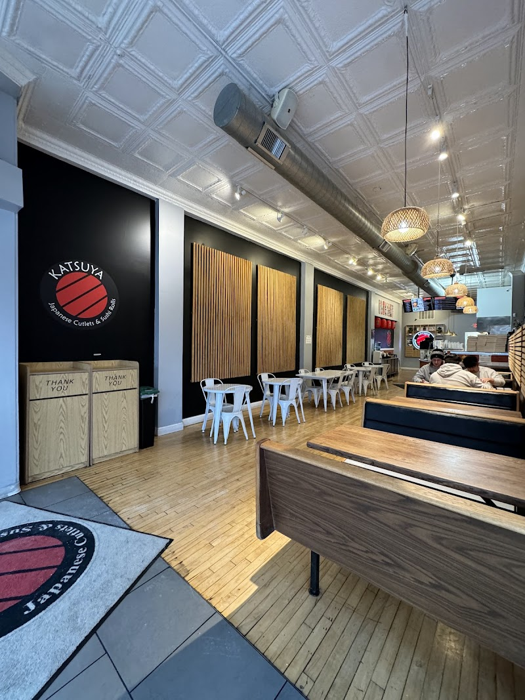

Ⅰ. KATSU BENTO BOXES
Your choice of protein, coated with panko breading and deep-fried.
Served with: rice, salad with ginger dressing, pickled vegetables, potato salad, seaweed salad, edamame, tamago, and a daily side dish.
- PORK KATSU · · · $15.50
-
Pork loin covered with panko breadcrumbs and deep-fried.
- CHICKEN KATSU · · · $14.50
-
Chicken breast covered with panko breadcrumbs and deep-fried.
- SHRIMP KATSU · · · $16
-
Shrimp covered with panko breadcrumbs and deep-fried.
- TOFU KATSU · · · $14
-
Tofu covered with panko breadcrumbs and deep-fried. Box filled with vegetarian items.
- CHEESE KATSU · · · $16
-
Pork and melted mozzarella cheese covered with panko breadcrumbs and deep-fried.
- MENCHI KATSU · · · $15
-
Ground pork, chicken, and onion formed into a patty, covered with panko breadcrumbs, and deep-fried.
- POTATO KOROKKE BOX · · · $15
-
Three fried potato croquettes. Served with rice, salad with ginger dressing, pickled vegetables, potato salad, seaweed salad, edamame, and tamago. Vegetarian. All vegetarian sides.
- FISH KATSU · · · $16
-
Three pieces of white fish, flounder or snapper, covered with panko breadcrumbs and deep-fried.
Ⅱ. SUSHI BENTO BOXES
Served with: salad with ginger dressing, seaweed salad, edamame, potato salad, tamago, cake, and a daily side dish.
Rolls
- KATSUYA ROLL · · · $16
-
Tuna, salmon, crab, tempura shrimp, avocado, and scallions. ※ Contains raw fish.
- ALASKAN ROLL · · · $14
-
California roll with imitation crab meat, cucumber, avocado, and rice, topped with seared Alaskan king salmon.
- SPICY SALMON ROLL · · · $14
-
California roll with imitation crab meat, cucumber, avocado, and rice, topped with spicy salmon, house sauce, and scallions. ※ Contains raw fish.
- SPICY TUNA ROLL · · · $14
-
California roll with imitation crab meat, cucumber, avocado, and rice, topped with spicy tuna and Sriracha. ※ Contains raw fish.
- CRUNCH ROLL · · · $14
-
California roll with imitation crab meat, cucumber, avocado, and rice, topped with crab meat, crunch mix, and house sauce.
- FRIED PHILLY ROLL · · · $14
-
Deep-fried roll with cream cheese, avocado, salmon, eel sauce, and spicy mayo.
- VEGGIE ROLL · · · $14
-
Cucumber, avocado, and mixed vegetables wrapped in seaweed paper. Vegetarian.
- KING KONG ROLL · · · $16
-
Deep-fried roll with two tempura shrimp, tuna, cucumber, avocado, and imitation crab meat. Topped with eel sauce and spicy mayo.
- SPIDER ROLL · · · $17
-
Fried soft-shell crab, imitation crab meat, cucumber, avocado, and masago. Topped with eel sauce.
- SALMON/AVOCADO ROLL · · · $14
-
Salmon and avocado.
Nigiri
Six pieces per order.
- SALMON NIGIRI · · · $16
-
Slices of salmon placed on top of sushi rice.
- SHRIMP NIGIRI · · · $16
-
6 pieces.
- SALMON/SHRIMP NIGIRI · · · $16.50
-
Three salmon nigiri and three shrimp nigiri.
Take a look inside Katsuya ↗

Ⅲ. À LA CARTE SUSHI
Individual rolls, packed with ginger, wasabi, and soy sauce.
Individual Rolls
- SINGLE CALI ROLL · · · $7.50
-
California roll with imitation crab meat, cucumber, avocado, and rice, wrapped in seaweed paper.
- SINGLE KATSUYA ROLL · · · $11
-
Tuna, salmon, imitation crab meat, tempura shrimp, avocado, and scallions. ※ Contains raw fish.
- SINGLE ALASKAN ROLL · · · $10
-
California roll with imitation crab meat, cucumber, avocado, and rice, topped with seared Alaskan king salmon. ※ Contains raw fish.
- SINGLE SPICY SALMON · · · $10
-
California roll with imitation crab meat, cucumber, avocado, and rice, topped with spicy salmon, house sauce, and scallions. ※ Contains raw fish.
- SINGLE SPICY TUNA ROLL · · · $10
-
California roll with imitation crab meat, cucumber, avocado, and rice, topped with spicy tuna, Sriracha sauce, and scallions. ※ Contains raw fish.
- SINGLE CRUNCH ROLL · · · $10
-
California roll with imitation crab meat, cucumber, avocado, and rice, topped with crab meat, crunch mix, and house sauce.
- SINGLE FRIED PHILLY · · · $10
-
Deep-fried roll with cream cheese, avocado, salmon, imitation crab meat, eel sauce, and spicy mayo.
- SINGLE VEGGIE ROLL · · · $8
-
Cucumber, avocado, and mixed vegetables rolled with rice and seaweed paper.
- SINGLE KING KONG ROLL · · · $11
-
Deep-fried roll with two tempura shrimp, tuna, cucumber, avocado, and imitation crab meat. Topped with eel sauce and spicy mayo.
- SINGLE SALMON/AVOCADO ROLL · · · $8
-
Salmon and avocado.
Nigiri
Six pieces per order.
- SALMON NIGIRI · · · $12
-
Slices of salmon placed on top of sushi rice.
- SHRIMP NIGIRI · · · $12
-
6 pieces.
- SALMON/SHRIMP NIGIRI · · · $12.50
-
Three salmon nigiri and three shrimp nigiri.
Ⅳ. SIDE DISHES
MISO SOUP · · · $2.50
RICE · · · $2.50
CURRY SAUCE · · · $3.50
- EGG ROLL · · · $6
-
2 pieces.
- VEGETABLE EGG ROLL · · · $6
-
2 pieces.
- CRAB RANGOON · · · $6.50
-
5 pieces.
- GYOZA · · · $6.50
-
6 pieces.
- TAKOYAKI · · · $6.50
-
6 pieces. Ball-shaped Japanese snack made with wheat-based batter and filled with minced octopus.
- POTATO KOROKKE · · · $6
-
2 pieces. Mashed potato coated with panko breadcrumbs and deep-fried. Vegetarian.
- KATSUYA SALAD · · · $3.50
-
House salad served with ginger dressing.
SEAWEED SALAD · · · $5.50
HOUSE KIMCHI · · · $3